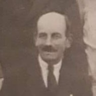

Samuel Goddard 1875 - 1940
[ Home ] | [ Calendar ] | [ Surnames Index ] | [ Errors ] | [ Family History ]An errand boy and bricklayer and the child of Frederick Goddard (a plumber's labourer) and Charlotte Page (a laundress), Samuel Goddard, the second cousin twice-removed on the father's side of Nigel Horne, was born in Folkestone, Kent, England on 3 Feb 18751,2,3,4,5, was baptised there at Christ Church on 21 Mar 1875 and married Elizabeth Fuller (with whom he had 6 children: Winifred, Ellen, Hilda, Bertram, Sidney and Lillian, along with 2 surviving children) at St John the Baptist Church, Margate, Kent, England on 11 Oct 18966.
During his life, he was living at Foord Road in Folkestone on 3 Apr 18811 and on 5 Apr 18912 and on Marshall Street in Folkestone in 1934.
He died on 1 Apr 1940 in Elham, Kent, England3.
Parents
- Frederick Steed was born in 1846
- Charlotte Ann was born c. Feb 1842
Children
- Winifred was born c. 1897
- Ellen was born c. 1899
- Hilda was born c. 1900
- Bertram was born c. 1902
Citations
- 1881 England, Wales & Scotland Census - Findmypast (was age 6 and the son of the head of the household)
- 1891 England, Wales & Scotland Census - Findmypast (was age 16 and the son of the head of the household)
- England & Wales deaths 1837-2007 - Findmypast
- Kent Baptisms - Findmypast
- Kent Marriages And Banns - Findmypast
- Kent Marriages And Banns - Findmypast
Media
Samuel Swanson Goddard

Folkestone, Hythe, Sandgate & Cheriton Herald - 3 Mar 1934

England Births & Baptisms 1538-1975 - R_884910823
Kent Baptisms - GBPRS/CANT/B/96012599
1881 England, Wales & Scotland Census - GBC/1881/0004951844
England & Wales deaths 1837-2007 - BMD/D/1940/2/AZ/000344/010
England & Wales marriages 1837-2005 - BMD/M/1896/4/AZ/000140/084
Kent marriages and banns - GBPRS/CANT/M/97032801/1
Kent marriages and banns - GBPRS/CANT/M/97025231/1
Family Tree

Map
Generated by ged2site. Last updated on Jul 3, 2024
Known Issues
Residence record for 1934 contains no citation
Listed in the residence for 1934, but spouse Elizabeth Fuller is not
1939 UK register information missing